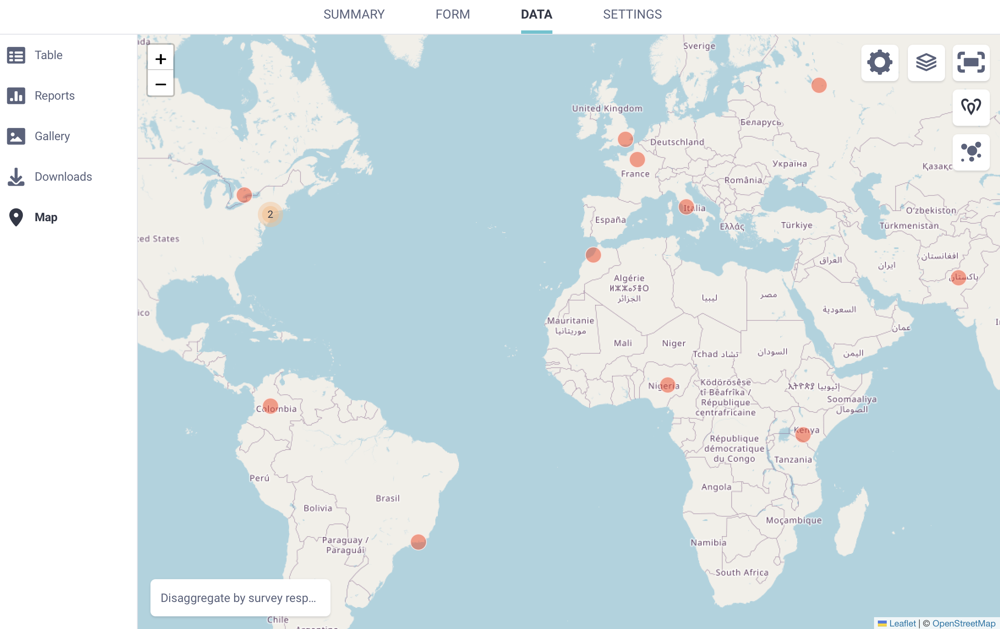
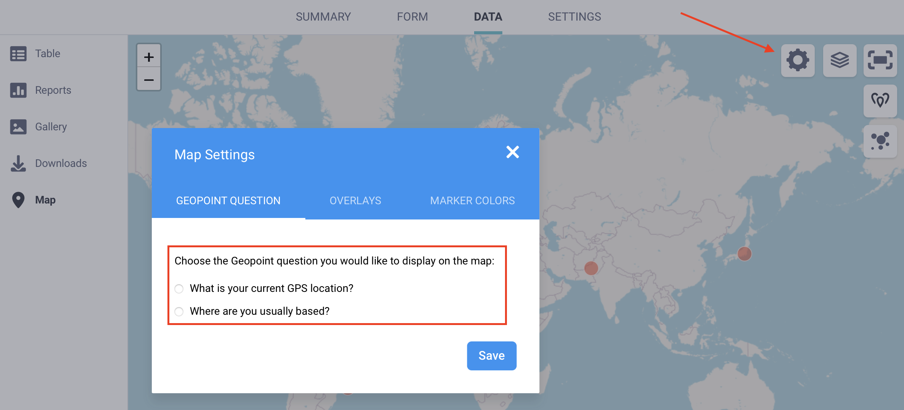
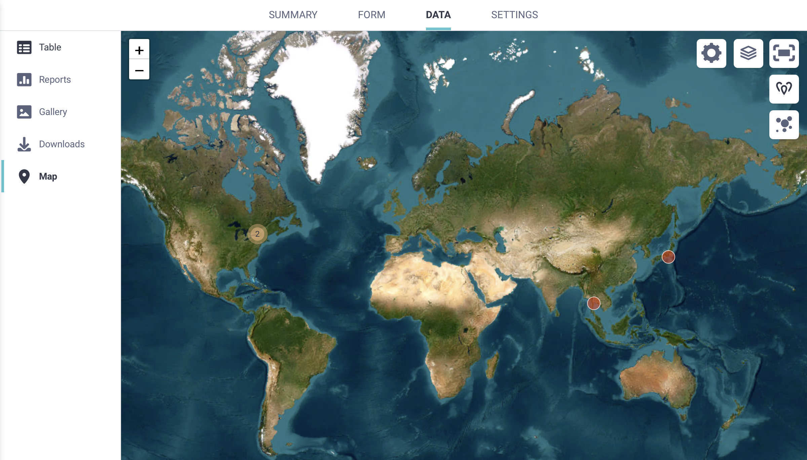
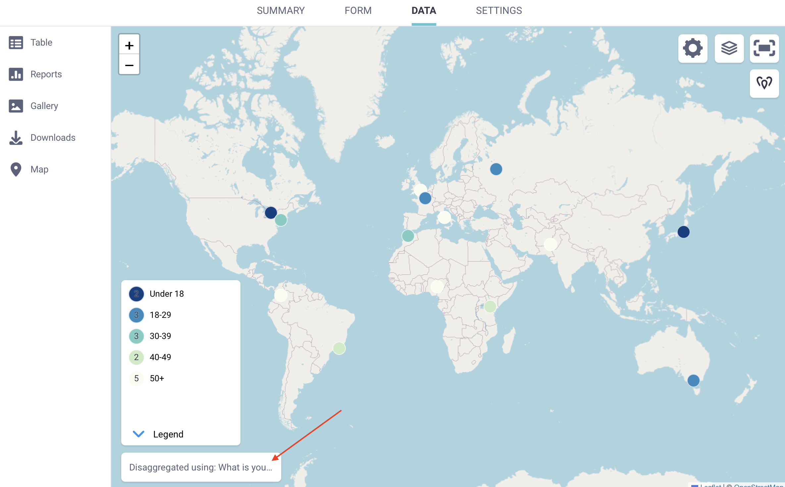

Busca en nuestra documentación, explora nuestros recursos y visita nuestro Foro de la Comunidad para obtener información más detallada
Última actualización: 5 Jun 2026
Las preguntas GPS en KoboToolbox te permiten recolectar información geográfica precisa como puntos individuales, o una colección de puntos que representan un camino o área durante la recolección de datos. Cada registro GPS incluye latitud, longitud, altitud y precisión, que puedes ver directamente en la tabla de datos. KoboToolbox también incluye una vista de Mapa integrada que ayuda a los usuarios a visualizar puntos GPS individuales, explorar patrones y comprender mejor dónde se recolectaron los envíos.
Este artículo explica cómo ver y mapear datos GPS en KoboToolbox, y describe los formatos de exportación disponibles para usar datos geoespaciales en otras herramientas y flujos de trabajo.
KoboToolbox te permite recolectar tres tipos de datos GPS en tus formularios:
Tipo de pregunta en el Formbuilder |
Tipo de pregunta en XLSForm |
Tipo de dato GPS |
|---|---|---|
Point |
|
Un punto individual |
Line |
|
Un camino formado por múltiples puntos |
Area |
|
Un área formada por múltiples puntos |
Todas las respuestas GPS aparecen en la tabla de datos y se incluyen en las exportaciones de datos. Solo los puntos individuales, denominados geopoints en la interfaz de usuario, pueden mostrarse en la vista de Mapa de KoboToolbox.
Nota: También puedes recolectar la ubicación automáticamente en segundo plano usando metadatos GPS. Los puntos GPS recolectados a través de metadatos del formulario no pueden mostrarse en la vista de Mapa.
Los datos GPS pueden recolectarse tanto con formularios web como con KoboCollect.
Para obtener más información sobre la recolección de datos GPS en tus formularios de KoboToolbox, consulta Recolectar datos de GPS con KoboToolbox.
KoboToolbox incluye una vista de Mapa integrada que muestra los puntos GPS recolectados a través de tu formulario. Cualquier usuario con el permiso Ver envíos puede acceder al mapa.
Para abrir el mapa:
Abre tu proyecto y ve a la página DATOS.
En el menú de la izquierda, selecciona Mapa.
Si tu formulario incluye al menos una pregunta geopoint, las ubicaciones recolectadas aparecen en el mapa.

Puedes acercar o alejar la vista usando los botones y en la esquina superior izquierda del mapa. Para ver el mapa en pantalla completa, haz clic en Alternar pantalla completa en la esquina superior derecha.
Cuando varios puntos GPS están muy próximos entre sí, aparecen como un único punto agrupado con un número que indica cuántos envíos están agrupados allí. Acerca la vista para ver los puntos individuales.
Nota: Solo las preguntas geopoint se muestran en el mapa. Los datos de geotrace y geoshape no se muestran.
De forma predeterminada, el mapa muestra los datos de la primera pregunta geopoint de tu formulario. Si tu formulario incluye varias preguntas geopoint, puedes elegir cuál mostrar.
Para seleccionar una pregunta diferente:
Haz clic en Configuración de la visualización del mapa.
En GEOPOINT QUESTION, selecciona una pregunta geopoint diferente de la lista.

Nota: Esta opción solo está disponible si tu formulario incluye más de una pregunta geopoint.
Puedes cambiar cómo se muestran los datos GPS en el mapa usando los controles disponibles.
Para cambiar el tipo de visualización:
Haz clic en Mostrar en forma de mapa de calor en la esquina superior derecha para ver los datos como un mapa de calor.
Haz clic en Mostrar en forma de puntos para volver a los marcadores de puntos individuales.
Nota: Un mapa de calor es una visualización que muestra la concentración de envíos según sus coordenadas geográficas. Las áreas con puntos de datos más agrupados aparecen con mayor intensidad, mientras que las áreas con menos envíos aparecen más claras. Los mapas de calor ayudan a identificar patrones geográficos y zonas de alta concentración sin mostrar puntos individuales.
Para cambiar la capa base del mapa:
Haz clic en Alternar capas en la esquina superior derecha.
Selecciona una capa base, como OpenStreetMap, OpenTopoMap, ESRI World Imagery o Humanitarian. La capa base predeterminada es OpenStreetMap.

También puedes agregar capas personalizadas adicionales sobre tu mapa:
Abre Configuración de la visualización del mapa.
Ve a OVERLAYS.
Ingresa una etiqueta para la capa y carga un archivo en formato CSV, KML, KMZ, WKT o GeoJSON.
Los archivos cargados aparecen como capas opcionales que puedes activar o desactivar desde el mapa.
Nota: Solo los propietarios del proyecto o los usuarios con permisos de Gestionar el proyecto pueden agregar capas personalizadas a un mapa.
Puedes agrupar los puntos GPS en el mapa según las respuestas a otras preguntas de tu formulario. Esto te ayuda a comprender cómo se distribuyen geográficamente los diferentes grupos de encuestados.
Para desagregar puntos:
Haz clic en Desagregar según respuestas de la encuesta en la esquina inferior izquierda del mapa.
Selecciona la pregunta que deseas usar para categorizar los puntos. También puedes cambiar el idioma de visualización.

Para cambiar el conjunto de colores usado para los puntos desagregados:
Abre Configuración de la visualización del mapa.
Selecciona MARKER COLORS.
Elige un conjunto de colores diferente.
Para eliminar la desagregación:
Haz clic en Desagregar utilizando: [etiqueta de la pregunta].
Selecciona – Ver todos los datos – de la lista.
Si tu proyecto tiene más de 1.000 envíos, el mapa mostrará solo 1.000 puntos GPS de forma predeterminada. Puedes aumentar el número de puntos mostrados desde la configuración del mapa.
Para cambiar el número de puntos mostrados:
Abre Configuración de la visualización del mapa.
Selecciona QUERY LIMIT.
Ajusta el control deslizante para elegir cuántos envíos mostrar en el mapa.
Mostrar un gran número de puntos GPS puede ralentizar tu navegador, especialmente con conjuntos de datos más grandes. Aumentar el límite es temporal y se restablece cada vez que vuelves a abrir el mapa.
KoboToolbox ofrece varias opciones para exportar datos GPS. Cada formato es compatible con diferentes flujos de trabajo, incluyendo la revisión de datos, el mapeo y el análisis geoespacial.
Al exportar datos como CSV o XLS, las coordenadas GPS se incluyen en varias columnas:
Una columna con el conjunto completo de coordenadas.
Solo para preguntas geopoint, columnas separadas para latitud, longitud, altitud y precisión.

Nota: En este contexto, accuracy (exactitud) y precision (precisión) hacen referencia al mismo valor.
Las exportaciones en CSV y XLS son útiles para revisar y limpiar datos en software de hojas de cálculo. También pueden importarse en muchas herramientas GIS, aunque generalmente se requiere una preparación adicional. Esto puede incluir especificar los campos de coordenadas, definir un sistema de referencia de coordenadas o convertir los datos a otro formato geoespacial.
Nota: Para preguntas de tipo geotrace y geoshape, las exportaciones en CSV y XLS incluyen una sola columna con las coordenadas GPS separadas por punto y coma. Generalmente se requiere un procesamiento adicional para extraer los puntos individuales o convertir los datos en geometrías de línea o polígono para su uso en software GIS.
GeoJSON es el formato recomendado para preparar datos GPS para su uso en software GIS como ArcGIS o QGIS. Es ampliamente compatible y funciona bien con los flujos de trabajo geoespaciales más comunes.
Al exportar a GeoJSON, KoboToolbox convierte los tipos de preguntas GPS a tipos de geometría GeoJSON estándar, como se muestra a continuación:
Formbuilder |
XLSForm |
GeoJSON |
|---|---|---|
Point |
|
Point |
Line |
|
LineString |
Area |
|
Polygon |
Durante la exportación, el valor de precisión incluido en las coordenadas GPS no se conserva, ya que GeoJSON no admite un campo de precisión. El orden de las coordenadas también cambia de latitud longitud en KoboToolbox a longitud latitud en GeoJSON.
De forma predeterminada, las exportaciones GeoJSON están estructuradas por envío. Para una mejor compatibilidad con las herramientas GIS, puedes activar la opción Aplanar GeoJSON en la configuración avanzada de exportación. Esto combina todas las respuestas GPS en una única FeatureCollection.
Nota: Cuando el GeoJSON está aplanado, puede ser más difícil identificar qué respuestas GPS provienen del mismo envío. Esto es más notable en formularios con más de una pregunta GPS por envío. En formularios con solo una pregunta GPS por envío, esto generalmente no representa un problema.
Si un envío no incluye un valor para una pregunta GPS, no aparecerá en la exportación GeoJSON. Si planeas exportar datos como GeoJSON, asegúrate de que al menos una pregunta GPS esté completada en cada envío.
Si tu formulario incluye varias preguntas GPS, es posible que quieras exportar solo la que planeas usar para el mapeo. Usa la opción Seleccionar las preguntas que se exportarán en la configuración avanzada de exportación para limitar qué campos GPS se incluyen.
KML está pensado para su visualización en herramientas que admiten de forma nativa este formato, como Google Earth. Admite estilos básicos para una visualización rápida en mapas. Si bien las exportaciones KML siguen estando disponibles en KoboToolbox, este formato es limitado y solo debe usarse cuando lo requiera un flujo de trabajo específico.
Las exportaciones KML en KoboToolbox solo admiten preguntas de tipo geopoint. Si un formulario incluye preguntas geotrace o geoshape, esas geometrías no se incluyen en la exportación KML.
Si un formulario contiene varias preguntas geopoint, solo se incluye el primer geopoint del formulario en el archivo KML. Las preguntas geopoint adicionales se omiten. Además, las exportaciones KML incluyen únicamente la ubicación del geopoint y el ID del envío. Los demás campos del envío no se incluyen.
Por último, al igual que con GeoJSON, el orden de las coordenadas cambia de latitud longitud en KoboToolbox a longitud latitud en GeoJSON.
Nota: Para obtener más información sobre cómo exportar tus datos GPS desde KoboToolbox, consulta Exportar y descargar datos.
¿Encontraste lo que buscabas? ¿La información fue clara? ¿Faltaba algo?
¡Comparte tus comentarios para ayudarnos a mejorar este artículo!